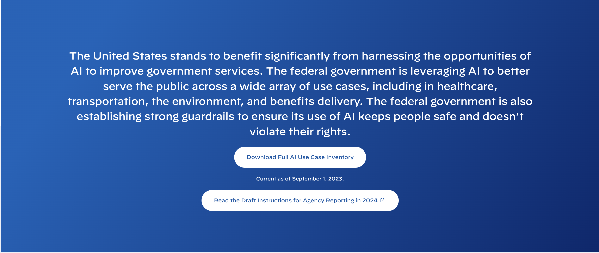

In October 2023, the Biden Administration issued an
executive order on AI
to address the extraordinary potential for both promise and peril that
Artificial intelligence (AI) possesses." The executive order
establishes
new standards for AI safety and security, protects Americans’ privacy,
advances equity and civil rights, stands up for consumers and workers,
promotes innovation and competition, advances American leadership around
the world, and more."
In addition to creating new standards for AI safety and security, the
executive order requires that the "the Director of [the Office of
Management and Budget] shall, on an annual basis, issue instructions to
agencies for the collection, reporting, and publication of agency AI use
cases."
To comply with this order, the federal government created the first ever
Federal AI Use Case Inventory. As technology continues to develop at a rapid pace, this inventory
marks an important moment in addressing the ways that that technology
can be utilized for the public good in ways that are safe, secure, and
transparent.
However, the inventory is not without its flaws. For anyone that has
worked with government data knows, providing data in a accessible format
is never a given. Attempting to view the inventory simply begins a
download of a csv file.

I will give them one point for providing a
machine-readable
format and then promptly take a point away for just providing a 710 row
CSV file. This format is essentially useless for most people. They
neglect to provide any summary statistics or way to view the inventory
such as in a table. As the federal government's
own principles
outline, this data is not accessible and is not "available to the widest
range of users for the widest range of purposes."
In an effort to make the inventory more digestible (wc), scroll along
below to explore how the Federal Government has reported its use of AI.
If you would like to skip to the inventory in full,
click here view to
a sortable table of the entire inventory.
The Federal AI Use Case Inventory contains 710
Use Cases of AI as of September 1st, 2023. Each box represents
one use case.
For the inventory, each department and agency submitted their own list
of use cases. For example, the Department of Treasury included a
Collection Voice Bot, an model to
help direct a taxpayer down a certain call path given their verbal
response over the phone.
Hover over a box to learn more about the specific model at any
time
The use cases are spread across 21 departments and agencies including
all 15 executive departments, illuminating that AI use has become
widespread in the federal government. Just two departments, the
Department of Energy and the
Department of Health and Human Services, make up almost half of all reported use cases in the inventory. The
Department of Commerce,
Department of Homeland Security, and
Department of Veterans Affairs round
out the top 5 departments or agencies. Use the drop down below to
highlight a specific department in the
Other Departments category.
What exactly is considered an "use case of AI"? The collected
inventory shows that the federal government struggles to provide a
clear understanding of this term, a
common challenge
for many with non-technical careers. In the inventory, the term AI is
incredibly expansive. It includes use cases that fit the traditional
definition of AI such as machine learning models that use
large language models
for chatbots or
neural networks
for facial recognition but also
includes analytics tools, and
data infrastructure, technical tools
that most experts would not consider AI.
The inventory requires departments to list a technique for each use
case however categories are not standardized across departments making
them difficult to group. In addition, despite it being labeled as
mandatory in the
provided iventory instructions, over 50% of use cases have
no listed technique. 10 of the 21
departments did not provide a technique for a single reported use
cases including the Department of Commerce, the Department of Health
and Human Services, and the Department of Veteran Affairs.
Using the use case titles and summaries, I attempted to standardize
and fill in missing techniques. While this is not a perfect
categorization, it does give insight into how the federal government
is using AI. TODO Blank % of the models were this and that. See all
the created categories using the drop down. TODO Click here to view
expanded definitions of each technique.
In addition to technique, just 2% of the use cases have
publicly available source code. This
raises concerns about the transparency of AI tools being used by the
federal government.
Also included in the inventory is information indicating a use case's
stage in development. Once again, despite being a mandatory field in
the provided instructions, roughly 50% have no provided development
stage.
Of the use cases that did include a development stage, roughly 50% are
currently in use, 25% are in development, and 25% are in planning. As
expected, AI use in the federal government will only continue to
increase in the years ahead.
There is much more to explore in the Federal AI Use Case Inventory.
With the first release in September 2023, we may expect an updated
inventory to be released on September 2024. In the meantime, you can
explore the current inventory by hovering over the boxes below.
While reviewing the guidelines for
the inventory, there appears to be lots of value information that was
collected that was not shared in this instal release. This includes
questions such as TODO. It appears this initial release was a collection
of each of each department
posted page.
One may be able to get some of this information by viewing the inventory
from each individual department's link
here or this
may be a possible good
FIOA request.
As a quick aside, its worth mentioning the impact that the format of
data can have the accessability and usability. One of the principles of
posted by
resources.data.gov, an online repository of policies, tools, case studies, and other
resources to support data governance, management, exchange, and use
throughout the federal government, is that the data is
accessible
meaning that open data from the government should be"made available in
convenient, modifiable, and open formats..." and "...should be made
available to the widest range of users for the widest range of purposes,
often by providing the data in multiple formats for consumption."
Unfortunately, this is rarely upheld as anyone that works with
government data knows that you never know what format the data will be
in. One of the most common formats are PDFs which are often easy to view
on a computer but much more difficult to access the data to analyze and
are not
machine-readable. On the flip side, tabular data formats like CSVs or Excel files are
machine-readable but impossible or at the least difficult to analyze.
There are governments addressing these concerns by providing "multiple
formats for consumption" including machine readable formats as well as
dashboards, charts, and maps to allow users with a variety of technical
skills to still access and use the data. The City of Chicago's
Open Data Portal
is one example.